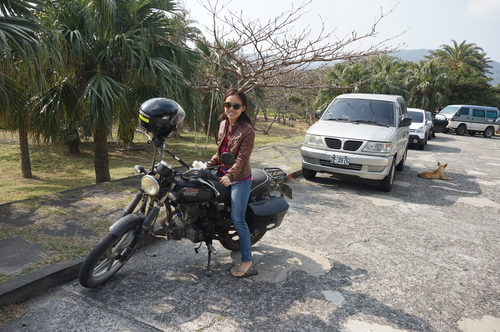

Ter Times
- 


About
Who is Dana Ter?
With more than eight years of journalism experience, I write guidebooks and articles for in-flight magazines, travel booking sites, hotels and tourism bureaus. I've worked with EVA Air, Singapore Airlines, Scoot, Philippine Airlines, ebookers, Marriott Bonvoy Traveler, DestinAsian, and Taiwan's Tourism Bureau. And I've filed stories from Taiwan, South Korea, Hong Kong, Japan, Cambodia, Vietnam, Thailand, Malaysia, Singapore, Myanmar, Guam, Australia, Portugal, France, Spain, the UK and the US and interviewed politicians, surfers, fortune tellers, farmers, celebrity chefs, cat breeders and fashion designers.
Currently, I'm the Taipei Correspondent for Louis Vuitton City Guides, published by BETC Paris in charge of writing the second edition print guide forthcoming in English and French in October 2021. I authored a print guidebook about Taiwan covering cultural and nature attractions, dining and festivals for Taiwan's Tourism Bureau in collaboration with CNBC Singapore published in August 2021 as part of a tourism campaing to welcome foreign visitors back to Taiwan. Since 2018, I also write and edit the Taipei digital guide, which is on iPhone app and covers hotels, restaurants, nightlife, fashion boutiques and art galleries. From 2014-2017, I was staff reporter and editor for the Features section of the English-language daily newspaper, the Taipei Times, where I started a column about Taiwan's craft beer, and as the newspaper's art critic, wrote a weekly column about art exhibitions. Before that, I was an entertainment news columnist for Mic in New York City.
I have a Dual Master's degree in International and World History from Columbia University and the London School of Economics and am a licensed PADI Open Water Diver. On my mom's side, I'm descended from generations of Peranakan seafarers and explorers from Penang and Singapore, while my dad's family is from Kuala Lumpur. Born in Selangor, I have Chinese, Malay and Thai ancestry and I speak, read and write Mandarin and some Malay. Growing up, I attended American schools in Hong Kong, Jakarta, Singapore, Kuala Lumpur and Taipei and have also lived in Melbourne, Bangkok, Seoul, New York City, London and Stockholm. From 2020-2021, I lived in surf shop on a remote subtropical beach on southern Taiwan's Pacific coast with a small community of local surfers and five dogs.
Favorites
{{ article.category }}
{{ article.title }}
{{ article.publisher }}, {{ article.published }}